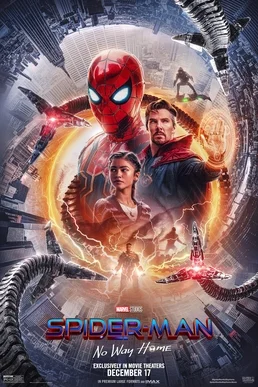
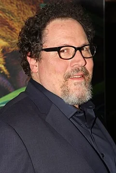
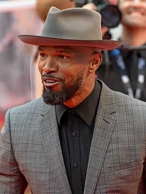

Spider-Man: No Way Home (2021)
| Movie | Release Date | Poster |
|---|---|---|
| Spider-Man: No Way Home PG-13 · 2h 28m · superhero · action · adventure |  |
| Trailer |
|---|
| Rotten Tomatoes | Metacritic | IMDb |
|---|---|---|
| 93% | 71/100 | View on IMDb |
| Overview |
|---|
Spider-Man: No Way Home is a 2021 American superhero film based on the Marvel Comics character Spider-Man. Produced by Columbia Pictures, Marvel Studios, and Pascal Pictures, and distributed by Sony Pictures Releasing, it is the sequel to Spider-Man: Homecoming (2017) and Spider-Man: Far From Home (2019), and the 27th film in the Marvel Cinematic Universe (MCU). The film was directed by Jon Watts, written by Chris McKenna and Erik Sommers, and stars Tom Holland as Peter Parker / Spider-Man alongside Zendaya, Benedict Cumberbatch, Jacob Batalon, Jon Favreau, Jamie Foxx, Willem Dafoe, Alfred Molina, Benedict Wong, Tony Revolori, Marisa Tomei, Andrew Garfield, and Tobey Maguire. In the film, Peter asks Dr. Stephen Strange (Cumberbatch) to use magic to make his identity as Spider-Man a secret again after it was revealed to the world at the end of Far From Home. When the spell goes wrong due to Peter's actions, the multiverse is broken open and several visitors from alternate realities are brought into Peter's universe. Full plot (spoilers)After Quentin Beck frames Peter Parker for his murder and reveals that Peter is Spider-Man , the Department of Damage Control arrests Peter; his girlfriend, Michelle "MJ" Jones-Watson ; his best friend, Ned Leeds ; and his aunt, May Parker . Lawyer Matt Murdock gets Peter's charges dropped, but the group grapples with negative publicity. After Peter's, MJ's, and Ned's MIT applications are rejected, Peter goes to the New York Sanctum to ask Dr. Stephen Strange for help. Strange starts casting a spell that would make everyone forget Peter is Spider-Man, but it is corrupted when Peter repeatedly requests alterations to let his loved ones retain their memories. Strange contains the corrupted spell. At Strange's suggestion, Peter tries to convince an MIT administrator to reconsider MJ's and Ned's applications. He is attacked by Otto Octavius , who rips nanotechnology from Peter's Iron Spider suit. This bonds with Octavius's mechanical tentacles and allows Peter to control them. As Norman Osborn arrives and attacks, Strange teleports Peter back to the Sanctum and locks Octavius in a cell next to Curt Connors . Strange explains that the corrupted spell summoned people from other universes within the multiverse who know Spider-Man's identity. He orders Peter, MJ, and Ned to find and capture the others; they locate and retrieve Max Dillon and Flint Marko at a military research facility. Osborn reclaims control of himself from his split Green Goblin personality and destroys the Goblin mask. He gets help from May until Peter retrieves him. While discussing their battles with Spider-Man, Osborn, Octavius, and Dillon realize they were pulled from their universes just before their deaths. Strange prepares to reverse the contained spell and send the villains back to their respective universes, but Peter argues that they should first help each villain to possibly change their fates upon their return. When Strange refuses, Peter steals the spell, traps Strange in the Mirror Dimension , and takes the villains to Happy Hogan 's apartment. He uses Stark Industries technology to cure Octavius. Before Peter can cure anyone else, the Goblin persona retakes control of Osborn. The Goblin convinces the other villains to betray Peter and fatally wounds May as Dillon, Marko, and Connors escape; before she dies, May tells Peter that " with great power, there must also come great responsibility ". Ned discovers that he can create portals using Strange's sling ring , which he and MJ use to try to locate Peter. They instead find " Peter-Two " and " Peter-Three ", alternate versions of Peter who were also summoned from the villains' universes by Strange's spell. The group finds this universe's Peter ("Peter-One"), who is mourning May and ready to send the villains home to die. The alternate Peters share stories of losing Uncle Ben and Gwen Stacy and encourage Peter-One to fight in May's honor. The three Peters develop cures for the villains and lure them to the Statue of Liberty . Peter-One and Peter-Two cure Connors and Marko while Octavius helps cure Dillon. Ned accidentally frees Strange from the Mirror Dimension. The Goblin unleashes the contained spell, breaking the barriers between universes and pulling in countless others who know Peter's identity. Strange attempts to hold them off while an enraged Peter-One tries to kill the Goblin. Peter-Two stops him and Peter-Three helps Peter-One inject the Goblin with his cure, restoring Osborn's sanity. Peter-One realizes that the only way to protect the multiverse is to erase himself from everyone's memory and requests Strange do so while promising MJ and Ned that he will find them and remind them who he is. Strange reluctantly casts the spell, and everyone returns to their respective universes— including Eddie Brock , who unknowingly leaves behind a piece of the Venom symbiote . Two weeks later, Peter visits MJ to reintroduce himself to her and Ned, but decides against it. While mourning at May's grave, he has a conversation with an unknowing Hogan and is inspired to carry on, making a new Spider-Man suit and resuming his vigilantism. |
| Actor | Character | Photo |
|---|---|---|
| Tom Holland | Peter Parker / Spider-Man A teenager and Avenger who received spider-like abilities after being bitten by a radioactive spider. |  |
| Zendaya | Michelle "MJ" Jones-Watson Peter's classmate and girlfriend. |  |
| Benedict Cumberbatch | Dr. Stephen Strange A neurosurgeon who became a Master of the Mystic Arts following a career-ending car accident. |  |
| Jacob Batalon | Ned Leeds Peter's best friend. |  |
| Jon Favreau | Happy Hogan The head of security for Stark Industries and former driver and bodyguard of Tony Stark, who looks after Peter. |  |
| Jamie Foxx | Max Dillon / Electro An Oscorp electrical engineer from an alternate reality who gained electric powers after an accident involving genetically modified electric eels. |  |
| Willem Dafoe | Norman Osborn / Green Goblin A scientist and the CEO of Oscorp from an alternate reality who tested an unstable strength enhancer on himself. |  |
| Alfred Molina | Otto Octavius / Doctor Octopus A scientist from an alternate reality with four artificially intelligent mechanical tentacles fused to his body after an accident. |  |
| Benedict Wong | Wong Strange's mentor and friend who became the new Sorcerer Supreme during Strange's absence in the Blip . |  |
| Tony Revolori | Eugene "Flash" Thompson Peter's classmate and former rival. |  |
| Marisa Tomei | May Parker Peter's aunt. |  |
| Andrew Garfield | Peter Parker / Spider-Man An alternate version of Peter who is haunted by his failure to save his deceased girlfriend, Gwen Stacy , during the events of The Amazing Spider-Man 2 . | No photo |
| Tobey Maguire | Peter Parker / Spider-Man An alternate version of Peter who uses organic webbing instead of web shooters like his alternate counterparts. | No photo |
| J. B. Smoove | Julius Dell | No photo |
| Angourie Rice | Betty Brant | No photo |
| Hannibal Buress | Coach Wilson | No photo |
| J. K. Simmons | J. Jonah Jameson | No photo |
| Paula Newsome | – | No photo |
| Charlie Cox | Matt Murdock | No photo |
| Rhys Ifans | Curt Connors | No photo |
| Thomas Haden Church | Flint Marko | No photo |
| Detail | Value |
|---|---|
| Directed by | Jon Watts |
| Written by | Chris McKenna, Erik Sommers |
| Produced by | Kevin Feige, Amy Pascal |
| Music by | Michael Giacchino |
| Cinematography | Seamus McGarvey, Mauro Fiore |
| Edited by | Jeffrey Ford |
| Production companies | Columbia Pictures, Marvel Studios, Pascal Pictures |
| Distributed by | Sony Pictures Motion Picture Group, InterCom, Sony Pictures |
| Running time | 148 minutes |
| MPAA rating | PG-13 |
| Budget | $200 million |
| Box office | $1.9 billion |
Overview, plot, and cast descriptions are from Wikipedia (CC BY-SA 4.0). Credits, ratings, and box office are from Wikidata.